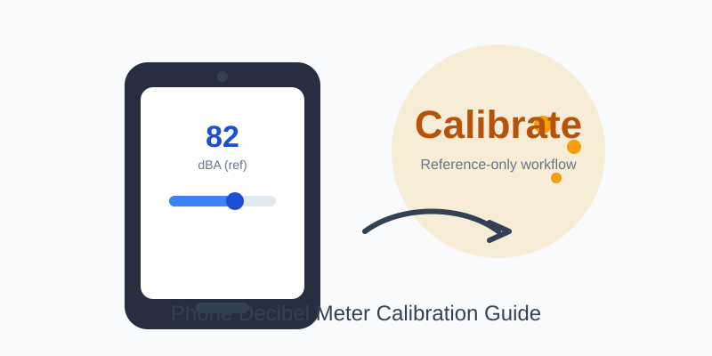
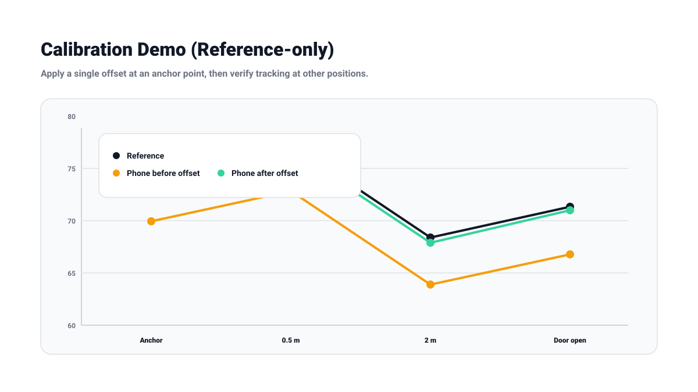

How to Calibrate a Phone Decibel Meter (Reference-Only)
Updated Mar 30, 2026 • 12 min read
Phone decibel meters are incredibly useful for awareness and comparisons, but they’re not laboratory instruments. Calibration can improve them, but only in a specific way: it can help align your phone’s readings to a reference within a limited range. It cannot magically remove microphone clipping, frequency roll-off, automatic gain control behavior, or differences between devices.
This guide is for informational purposes. For compliance, legal disputes, or medical decisions, use certified instruments and qualified professionals.
What Calibration Can (and Can’t) Fix
Calibration can help with
- Offset error: your phone reads consistently +4 dB high or -6 dB low compared to a reference.
- Consistency for before/after: your own device becomes more stable for repeat measurements over time.
Calibration can’t fix
- Clipping at very loud levels: many phone mics saturate around ~100–105 dB and then under-report louder environments.
- Frequency response differences: bass-heavy noise can read differently depending on mic tuning and weighting.
- Automatic gain control quirks: some devices adapt to changing loudness in a way that affects readings.
The Core Idea: Calibrate an Offset at a Realistic Level
For most practical use, you want your phone to be most accurate where decisions matter: moderate-to-loud environments (for example, 60–90 dB). Calibrating at extremes is less useful because phones can behave nonlinearly near their limits.
Think of calibration as setting a “reference anchor” for your own device, not proving absolute accuracy.
Three Calibration Options (From Best to Fastest)
Option A: Use a real sound level meter as reference (best)
If you have access to a certified meter (or a reputable Type 2 meter), use it as the reference source. Measure the same sound from the same location and set your phone’s offset so it matches the reference reading at the chosen level.
Option B: Use a known calibrated environment (good)
Some workplaces, labs, or test rooms are already monitored. If the environment has a trusted posted value (or controlled source), you can use it to anchor your phone within a useful range.
Option C: Create a repeatable “reference-only” anchor (fast)
If you don’t have any professional reference, you can still improve repeatability by creating your own anchor: choose one consistent source and measure it the same way every time. This won’t give you absolute accuracy, but it can make your measurements more comparable over weeks and months.
A Step-by-Step Workflow (Reference Meter Available)
- Choose your target level: calibrate around the range you care about (often 70–90 dB).
- Pick a stable sound source: continuous fan noise or steady pink noise is better than speech or music with dynamics.
- Match placement: hold the phone and the reference meter close together, same orientation, same height.
- Measure an average: record 30–60 seconds and use the average reading.
- Apply an offset: set the phone/app calibration so the average matches the reference.
- Verify once more: repeat the measurement to confirm the offset holds.
How to Verify Your Calibration (Without Overtrusting It)
A good verification test is a level change test: move the phone and reference meter to a slightly different location (or change distance to the source) and see if both devices move in the same direction by a similar amount. You’re checking for consistency, not perfection.
- If your phone tracks changes reasonably well, calibration was useful.
- If your phone diverges wildly, the limitation is likely the microphone behavior, not the offset.
Verification worksheet (download + example)
Use this CSV template to record your “anchor + verify” runs: calibration-offset-verification.csv.

| Position | Reference | Phone (before) | Offset | Phone (after) |
|---|---|---|---|---|
| Anchor (1 m) | 74.0 | 69.5 | +4.5 | 74.0 |
| Verify (2 m) | 67.1 | 62.0 | +4.5 | 66.5 |
Weighting: Use dBA for Most Hearing-Safety Decisions
For hearing safety and typical environmental noise, dBA is the most commonly used weighting. If you’re working with low-frequency-heavy noise (subwoofers, machinery rumble), you may also look at dBC or other weightings. Learn when each matters here: dBA vs dBC: Which One Should You Use?.
If You’re Using a Browser Meter (Like Ours)
Browser-based meters can be useful for awareness and comparisons, but they depend on the operating system, microphone permissions, and hardware. If you want to improve repeatability, keep these consistent:
- Use the same device and browser.
- Disable audio processing features if possible.
- Measure 60-second averages and write down context.
For a practical measurement method that reduces errors, start here: How to Measure Decibels Accurately.
Calibration Checklist (Copy/Paste)
- Pick a target range (usually 70–90 dB)
- Use a stable sound source (not speech)
- Match placement and orientation
- Use 30–60 second averages
- Apply offset once, verify once
- Document device, app, and settings